Totally Spies! Wiki
Sobre a Série
Três Espiãs Demais (Totally Spies!) é uma série de animação franco-canadense que acompanha as aventuras de Sam, Clover e Alex. Elas são três adolescentes comuns de Beverly Hills que vivem uma vida dupla como agentes secretas da WOOHP (Organização Mundial de Proteção Humana).
Lidando com problemas típicos da adolescência — como provas, garotos e moda — as meninas são frequentemente "sugadas" por passagens secretas (armários, latas de lixo, secadores de cabelo) para o escritório de seu chefe, Jerry, que as envia em missões internacionais para salvar o mundo de vilões bizarros e megalomaníacos.
A WOOHP
A World Organization Of Human Protection (Organização Mundial de Proteção Humana) é uma agência de espionagem supersecreta localizada no centro de Los Angeles. Fundada e liderada por Jerry Lewis na década de 1970, seu objetivo principal é combater o crime em escala global e proteger a humanidade de ameaças terroristas, cientistas loucos e criminosos internacionais.
Agentes Principais
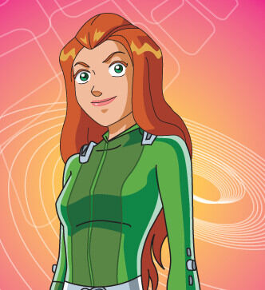
Samantha "Sam"
Traje: Verde
A líder intelectual do grupo. É a mais lógica, focada e madura, frequentemente elaborando os planos para derrotar os vilões e decifrar enigmas complexos.
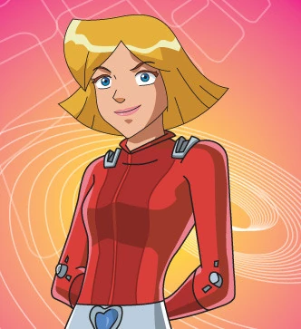
Clover Ewing
Traje: Vermelho
Viciada em moda, compras e garotos. Apesar de ser impulsiva e parecer superficial, é uma lutadora formidável e especialista em disfarces.

Alexandra "Alex"
Traje: Amarelo
A alma esportiva e carinhosa do time. É ingênua, atlética, adora animais e artes marciais. Geralmente é o coração que mantém o grupo unido.
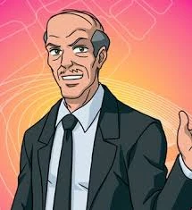
Jerry Lewis
Cargo: Diretor
O cavalheiro britânico fundador da WOOHP. Ele convoca as meninas nas horas mais inoportunas e fornece os "gadgets" de cada missão.
Galeria de Vilões e Rivais
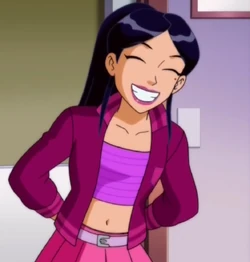
Mandy
Cargo: Invejosa Safada
A arquirrival das meninas na escola de Beverly Hills (e depois na universidade). Rica, mimada e com uma voz anasalada inconfundível.
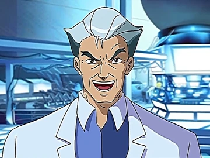
Terrence Lewis
Cargo: Vilâo Administrador/Instrutor (Falso)
O irmão gêmeo malvado de Jerry. Seu objetivo de vida é destruir a WOOHP e seu irmão. Ele fundou a L.A.M.O.S. (Liga de Antagonistas Ameaçando Oprimir o Sistema).
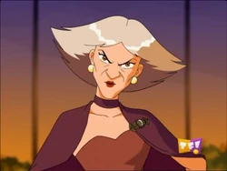
Helga Von Guggen
Cargo: Vilâ estilista de moda psicopata
Uma estilista que usa a moda para cometer crimes e mutações. Membro frequente da L.A.M.O.S..
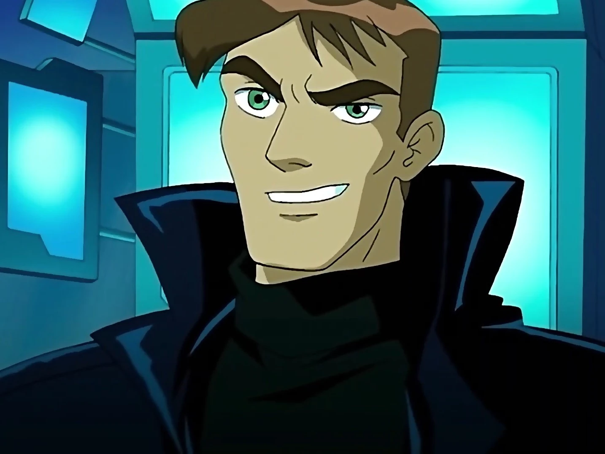
Tim Scam
Cargo: Vilâo estilista de moda psicopata
Ex-agente da WOOHP que foi demitido por uso ilegal de tecnologia. É um dos adversários mais inteligentes e perigosos das meninas.
Gadgets e Apetrechos (W.O.O.H.P.)
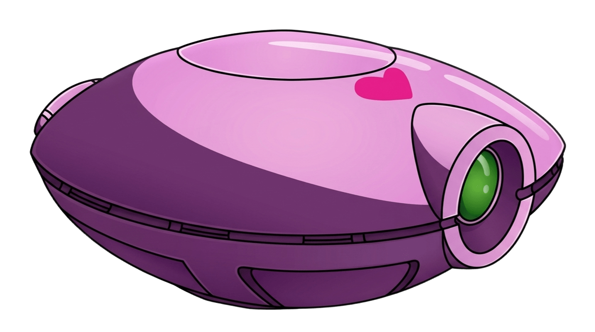
Compowder (Pó de Compacto)
O comunicador oficial das espiãs, disfarçado como um estojo de maquiagem. Ele possui scanner, telefone, banco de dados, laser e análise de DNA.
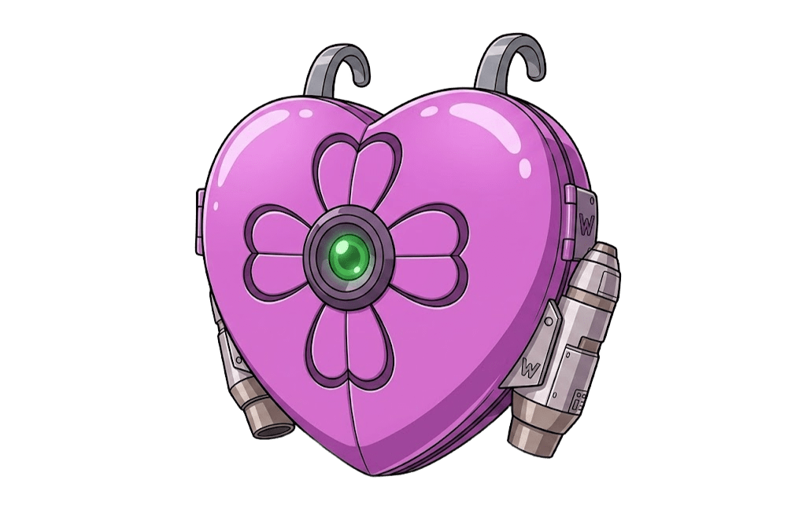
Mochila a Jato
Discreta, muitas vezes disfarçada de mochila comum, permite voos rápidos e manobras evasivas essenciais.
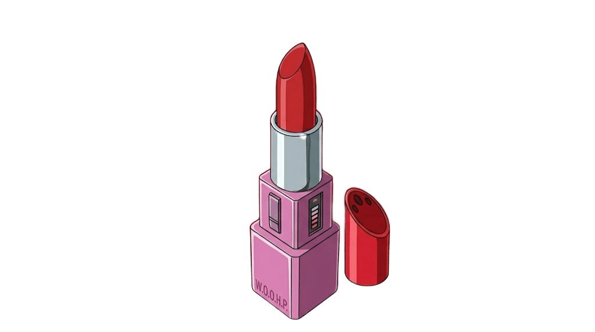
Batom Laser
Um laser de alta potência disfarçado de batom. Pode cortar portas de aço grossas, vidros blindados e derreter correntes.
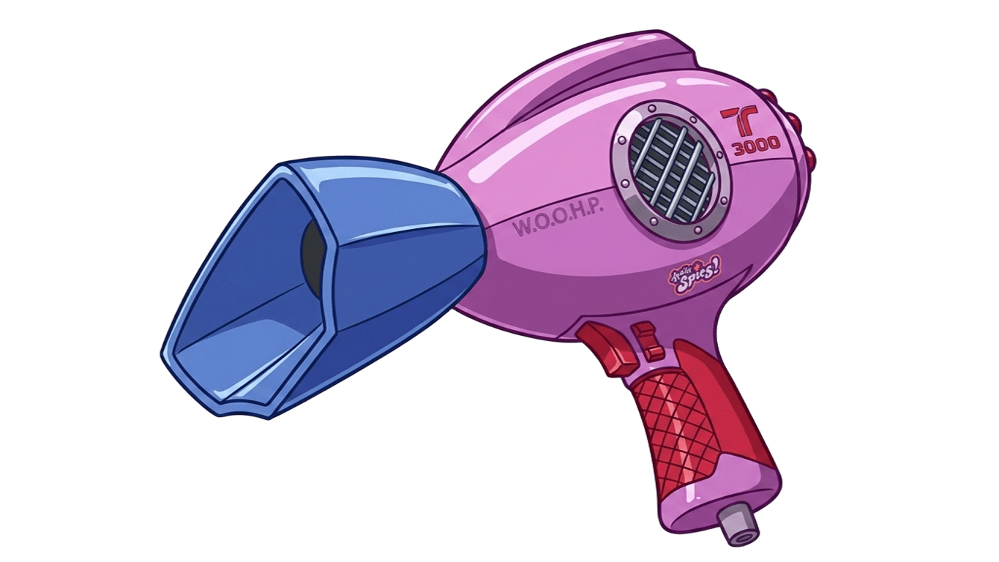
Secador Túnel de Vento
Um secador de cabelo capaz de gerar rajadas de vento com a força de um furacão em miniatura, repelindo inimigos.